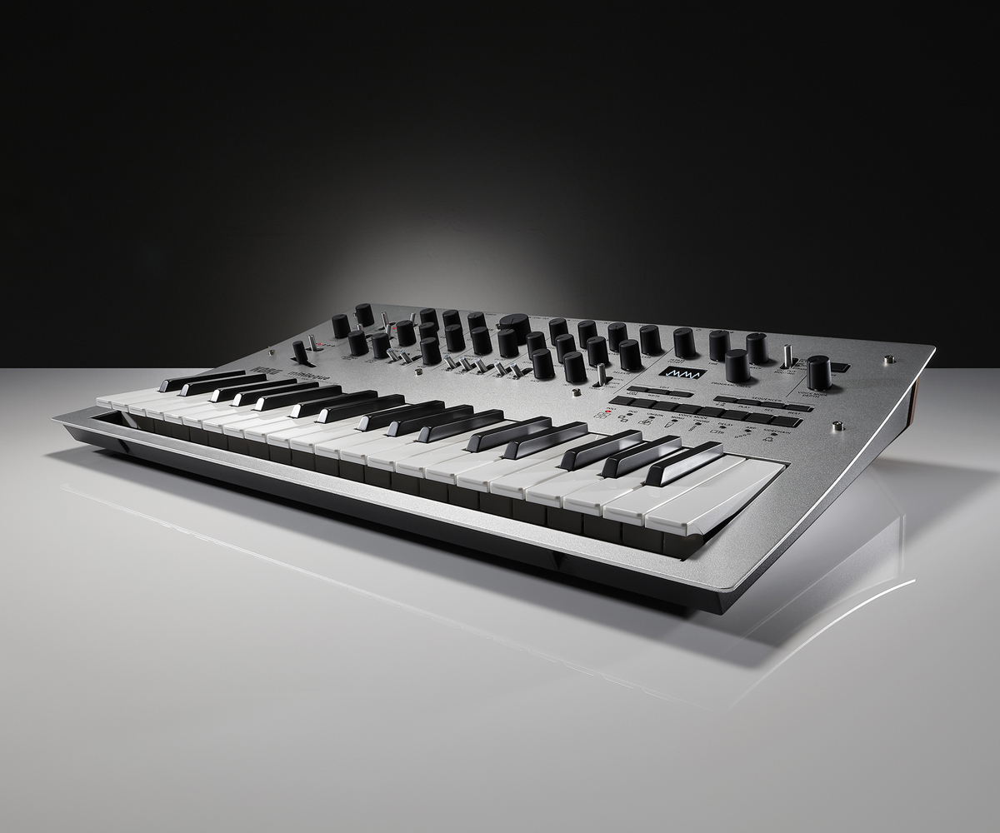

おすすめ機種
おすすめ機種の紹介
ここでは、特徴の異なる3つの人気アナログ・ガジェットを紹介します。 （注：紹介文やスペックは例です。正確な情報は公式サイト等で確認してください。）
Korg Monologue
強力な音作りができる、モノフォニック（単音）のアナログ・シンセサイザーです。25鍵のキーボードと16ステップのシーケンサーを搭載しており、これ1台で本格的なベースラインやリードサウンドを作曲・演奏できます。Aphex Twinがプリセット制作に参加したことでも話題になりました。
Korg Volca Beats
アナログ回路を採用した、コンパクトなリズムマシンです。キック、スネア、ハット、タムといった基本的なドラムサウンドを直感的に打ち込み（シーケンス作成）できます。電池駆動・スピーカー内蔵で、どこでもビートメイキングが楽しめます。

Korg Monotron Delay
手のひらサイズのアナログ・リボン・シンセサイザーです。リボンコントローラーを指でなぞって演奏するシンプルなシンセ機能に加え、本格的なアナログ・ディレイ（やまびこ効果）を搭載しています。他の楽器にディレイをかけるエフェクターとしても使用でき、ノイジーで強烈なサウンドを生み出します。